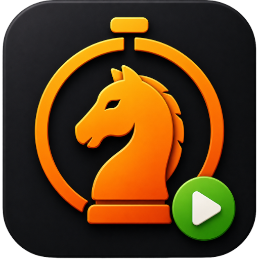
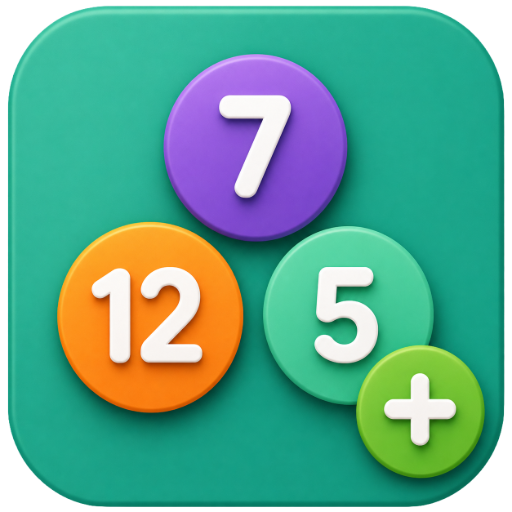
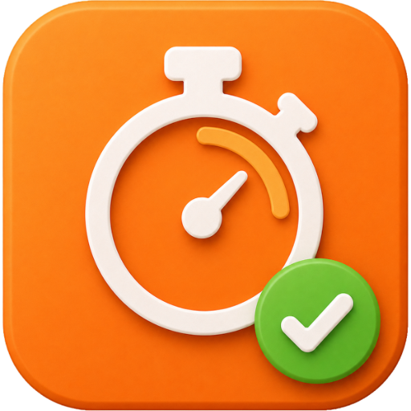
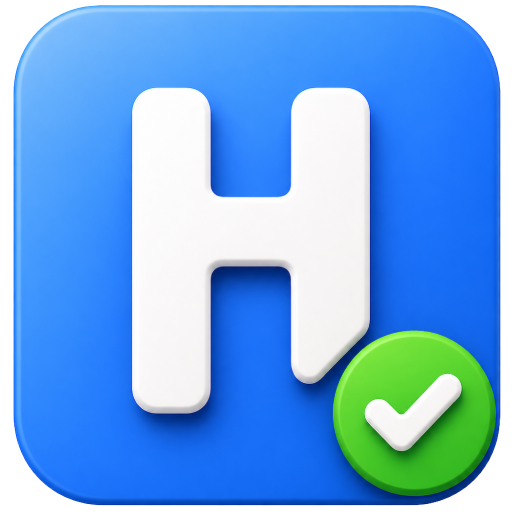
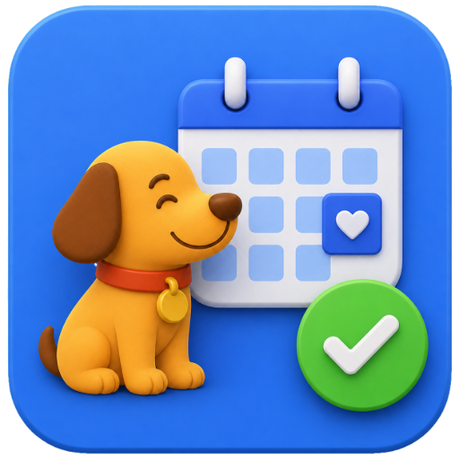
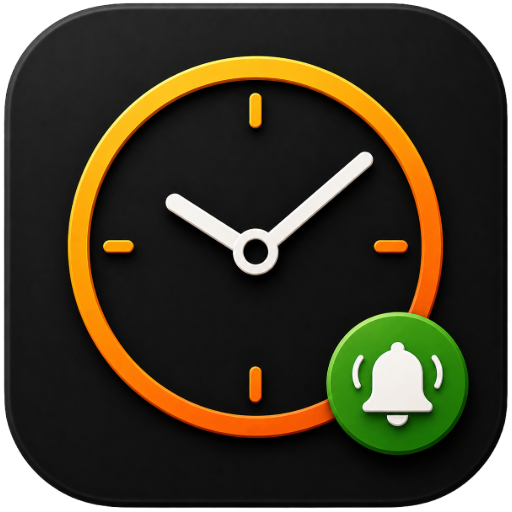
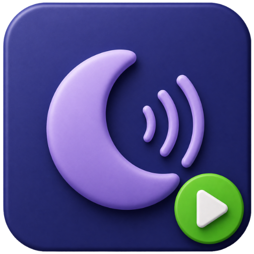
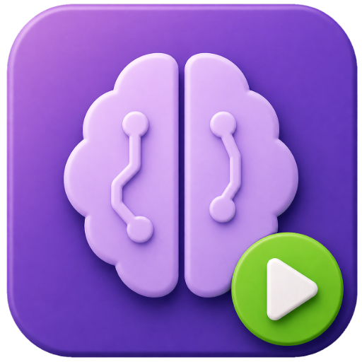

ChessTime
A chess clock for your next game.
Explore appI’m André Costa, and I create the apps at allc.dev. Here I share what I’m building, what’s new, and the improvements inspired by your feedback.
From a chess game to a quiet moment, find a tool that fits your day.

A chess clock for your next game.
Explore app
Stock, reps, rows. Make every count count.
Explore app
Make room for focused work and proper breaks.
Explore app
Build a routine, one small habit at a time.
Explore app
Keep your pet’s care and routines together.
Explore app
A little space to check in with yourself.
Explore app
Turn your screen into a clock worth looking at.
Explore app
Set the mood with your own mix of ambient sounds.
Explore app
Small challenges for memory, attention and logic.
Explore appRead, highlight and make time for the Bible.
A daily Bible quiz, with reading along the way.
I’m André Costa, a developer from Brazil. My background is in software architecture; here, I turn that experience into practical apps for everyday life.
I design, build and maintain these products myself. Your feedback helps me decide what to improve next.
ALLC PRO unlocks the PRO features across my apps. Subscribe inside any app and use the same account. The available benefits are explained in each app.
Already a subscriber? Your subscription stays the same.
Found a bug, have an idea, or just want to say hello? I’d like to hear from you.
Talk directly with André Costa
Google Play ↗Explore and download the apps
YouTube ↗Demos, updates and behind the scenes
GitHub ↗Projects and the developer behind them
Tell me which app you use and what happened. Your feedback goes directly to me.